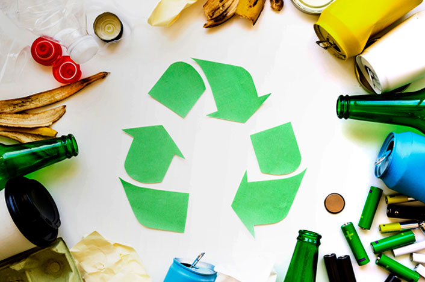
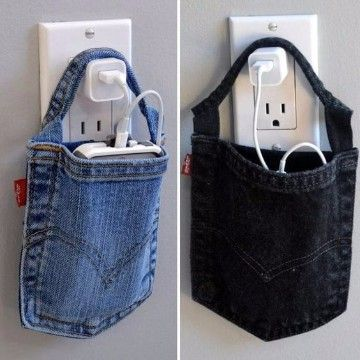
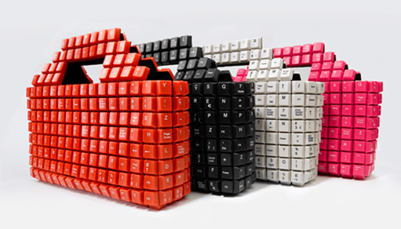
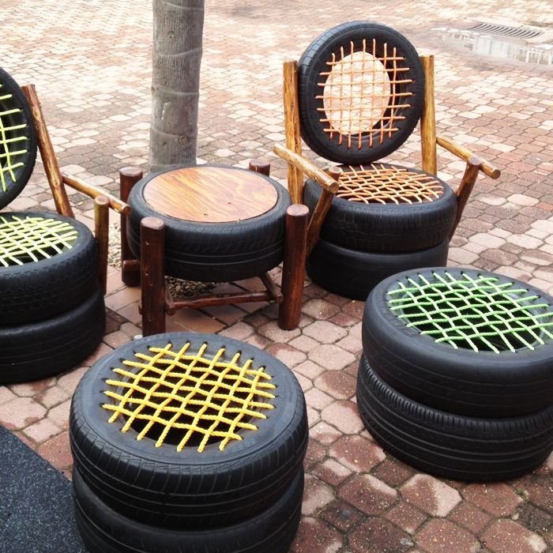

¿Es importante reciclar?
¿Que es reciclar?
Someter materiales usados o desperdicios a un proceso de transformación o aprovechamiento para que puedan ser nuevamente utilizados. "reciclar el papel, el vidrio y el plástico"
La importancia de...
El reciclar o el reciclaje es un acto de suma importancia para la sociedad ya que el mismo supone la reutilización de elementos y objetos de distinto tipo que de otro modo serían desechados, contribuyendo a formar más cantidad de basura y, en última instancia, dañando de manera continua al planeta.
Portafolio



